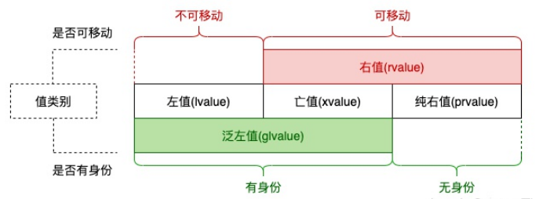

move
1. 值类别⏳
C++ 的表达式有两个维度的属性
- 类型 (type): 如
int(普通类型)int*、int&、int&&(复合类型) - 值类别 (value category): 左值 (lvalue)、将亡值 (eXpiring, xvalue)、纯右值 (prvalue)
值类别具体展开为
- 左值: 可以取地址的具名变量
- 变量名，函数名，数据成员如
std::cin等 ++i是左值，i++是右值
- 变量名，函数名，数据成员如
- 亡值: 拥有身份且可以移动
- 返回对象为对象的右值引用的函数调用 (或重载运算符)，如
std::move(x) - 转换为对象的右值引用的转型表达式，如
static_cast(x)
- 返回对象为对象的右值引用的函数调用 (或重载运算符)，如
- 纯右值
- 字面量，
this指针，lambda 表达式 - 内建数值运算表达式，如
a+b，a%b等
- 字面量，
判断维度:
- 拥有身份: 通过某个名字判断表达式之间是否指代同一实体
- 可被移动: 右值引用类型的形参可以绑定于这个表达式

这样分类是为了引用的绑定: 让 xvalue & prvalue 在函数重载中优先绑定右值引用，其次寻找常左值引用，从而正确发挥移动语义的作用
右值引用的绑定
void foo(int &) { std::cout << "lvalue" << std::endl; }
void foo(int &&) { std::cout << "rvalue" << std::endl; }
int main() {
int &&rref = 1;
foo(rref); // output: lvalue
}
rref: 类型是右值引用，值类别是左值，绑定到一个右值 1
2. 移动⏳
(1). 移动构造函数、移动赋值运算符⏳
编写移动 ctor 时，需要考虑:
- 假设移后源对象会被析构，更改其指针，防止当前对象被影响
- 加
noexcept - 移动赋值运算符需要考虑自赋值
Book(Book &&book) noexcept : rsc(book.rsc) {
book.rsc = nullptr;
}
Book& operator(Book &&book) noexcept {
if (this != &book) { ... }
return *this;
}
(2). 移动成员与 noexcept⏳
考虑 vector 的 reallocate 过程，如果扩容时出现异常:
- 申请空间时出现异常，
vector保持原有状态，异常交由上层用户处理 - copy 元素时出现异常，析构已经被 copy 的元素，
vector恢复为原有状态，异常交由用户
而 move 时已被 move 的对象会被破坏，此时抛出异常无法恢复 vector 的状态，程序理应终止，因此标准规定: 只有对象的移动成员声明了 noexcept，vector 在 reallocate 时才会调用对象的移动成员，如果抛出异常根据 noexcept 会调用 std::terminate()
3. 移动语义场景⏳
移动语义的语法基础即是 移动 ctor、移动赋值运算符和右值引用参数的函数的绑定机制，带来的好处是革命性的
对象 = 对象⏳
vector<string> str_split(const string& s);
vector<string> v1 = str_split("1,2,3");
vector<string> v2;
v2 = str_split("1,2,3");
这是移动语义带来的最直接的好处:
- prvalue 本身具有移动语义，可以直接优化
- xvalue 代表被认定具有移动语义的 glvalue，也优先绑定匹配右值引用
- lvalue 照常
上面的例子中，vector 默默做了移动的优化，优雅
对象存入容器⏳
void push_back(const T& value);
void push_back(T&& value);
容器是值语义的，而移动语义可以优化右值存入容器
vector 的 reallocate⏳
前面提到过，移动成员若声明了 noexcept，vector 在 reallocate 时会调用它们
unique_ptr 放入容器⏳
unique_ptr 不允许复制，使得它无法放入 vector 中，且需要移动所有权
auto_ptr用拷贝 ctor 实现移动语义，这是它的失败之处: (1). 平时需要移动时只能调用拷贝函数，看起来疑惑 (2). 存入容器后，对容器排序会造成错误
而通过移动语义，unique_ptr 可以放在容器中，需要复制时就调用 unique_ptr 的移动操作
按值传参⏳
class People {
public:
People(string name) : name_(move(name)) { }
string name_;
};
People a("Alice"); // move ctor of "string name"
string bn = "Bob";
People b = bn; // copy ctor of "string name"
传参时语义上会有一次拷贝，而将其改为移动
- 提高效率
shared_ptr作为实参并不少见，shared_ptr的拷贝需要考虑线程安全且浪费，显然移动更轻便合适
按值返回⏳
vector<string> str_split(const string& s) {
vector<string> v;
...
return v;
}
v 是栈上左值对象，标准要求优先调用移动 ctor，然后再考虑拷贝 ctor. 其好处在于:
- 效率问题，同上
- 工厂函数常常需要返回
unique_ptr，而unique_ptr不支持拷贝
unique_ptr<SomeObj> create_obj(...) {
return unique_ptr<SomeObj>(new SomeObj(...));
}